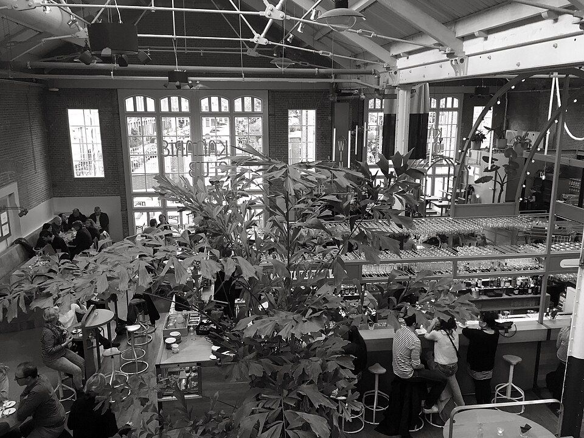

Spang Makandra
An unfussy Surinamese meal on the neighbourhood circuit.
Hours, bookings & sources
Published Mon–Sat 11–22, Sun 13–22; check the branch and same-day hours.
Roti rolls, onigiri, sandwiches, burgers and market bites.
An unfussy Surinamese meal on the neighbourhood circuit.
Published Mon–Sat 11–22, Sun 13–22; check the branch and same-day hours.
Square Roman pizza slices rather than another sit-down reservation.
Walk-in. Official Instagram is the best current-hours check; the website had an expired certificate. Ask about the cheese/toppings if avoiding goat or sheep dairy.
Discovery & evidence:
Double smash burgers near home, served until sold out.
First come, first served from noon; sell-out may precede listed close. Confirm cheese ingredients if needed.
Discovery & evidence:
Watch a warm stroopwafel come off the iron at Albert Cuypmarkt.
Market food truck usually near Albert Cuypstraat 182. Vendor states Mon–Tue and Fri–Sat 11–17; closed Wed–Thu and Sun, even when the market opens.
Surinamese broodjes from a family shop that began behind a soul-and-R&B record counter.
Van Woustraat 17; do not confuse the sandwich shop with the separate Tjin’s Toko. The original Kinkerstraat record shop sold soul and R&B before the broodjes took over. Verify hours on the official locations page.
Discovery & evidence:
A no-frills lahmacun stop at the quieter end of Van Woustraat.
Van Woustraat 160. I amsterdam recommends its lahmacun specifically; confirm current service hours before going.
Discovery & evidence:

Photographed at the venueFlexible fallback when you want different cuisines in one place.
Officially daily 12–23, no reservations. More mainstream and pricier than a hidden local favourite. Photo is of the actual hall.
Photograph: Wikimedia Commons (CC BY 2.0); cropped for display.
Plant-based baking and coffee for a portable breakfast.
Lindengracht 158. Separate from the savoury deli at number 99; check bakery hours on its own page.
The savoury sandwich counterpart to the bakery, a few doors away.
Lindengracht 99; distinct venue from the bakery at number 158. Check hours and current menu.
House-made pastrami and cured-meat sandwiches from a tight menu.
Tweede Leliedwarsstraat 13; official site lists Wed–Sun 11–17.
Warm sourdough-focaccia sandwiches with a compact menu on Spuistraat.
Spuistraat 214 on the official site. Local firsthand post praises the Spicy Chicken and Rosèl sandwiches; an indexed snippet with number 207 is outdated.
Discovery & evidence:
Surinamese roti rolls and broodjes inside Waterlooplein metro, not a souvenir-street snack.
Family-founded station counter since 1995; Waterlooplein metro location confirmed by its own site. I amsterdam singles out the roti rolls.
Discovery & evidence:
Hand-stacked döner with a local following at a named market stall.
Dapperstraat 4. I amsterdam documents the stall. Market Mon–Sat; individual vendor attendance can vary.
Discovery & evidence:
Fast Syrian falafel or shawarma on Javastraat.
Javastraat 20H. Official menu emphasises street food; verify opening before crossing Oost.
Discovery & evidence:
Surinamese bara, broodjes and roti near Dappermarkt.
Eerste van Swindenstraat 191. Official site confirms this address after a move from Zuidoost.
Freshly made onigiri for a quick Japanese lunch inside Wibautstraat metro.
Independent Japanese-run counter in Wibautstraat metro station; select a daily filling. I amsterdam and the venue both confirm the station location.
Discovery & evidence:
An independent burger option by the skatepark and Garage Noord, away from NDSM.
Aambeeldstraat 38. The old brewery kitchen moved; use the current Transit address, not stale map listings. A local burger shortlist names Beef Chief North.
Discovery & evidence: